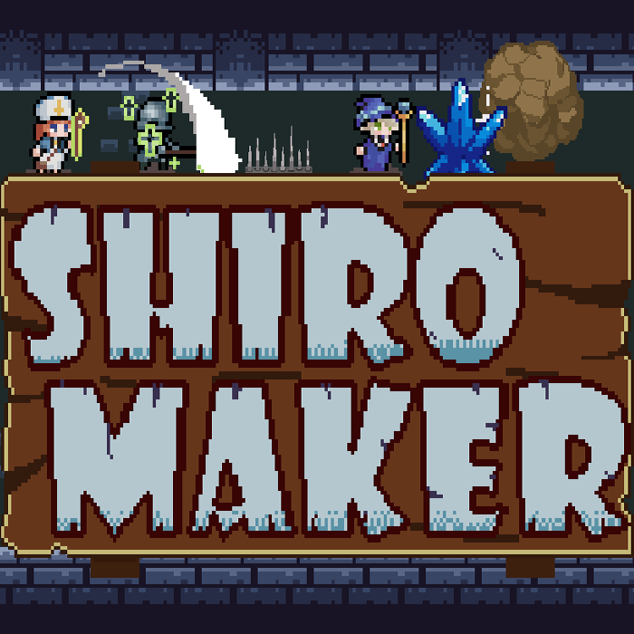

GAMES & RELATED PROJECTS
SASSAKOSAKSAK
PORTFOLIO
ゲームやゲーム関連の制作物置き場
GAME PROJECTS
ゲーム
個人で制作したゲーム

02 / PERSONAL PROJECT
TREASURE SEEKER
探索・戦闘・環境演出を備えた、2D横スクロールアクションのプロトタイプ。
GAMES & RELATED PROJECTS
ゲームやゲーム関連の制作物置き場
GAME PROJECTS
個人で制作したゲーム

02 / PERSONAL PROJECT
探索・戦闘・環境演出を備えた、2D横スクロールアクションのプロトタイプ。